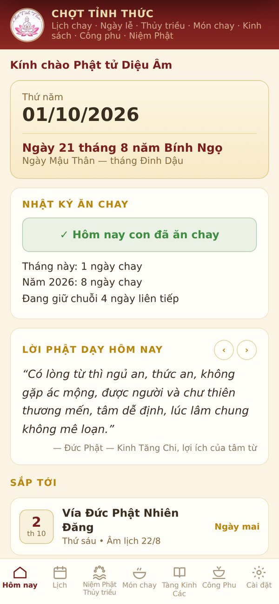
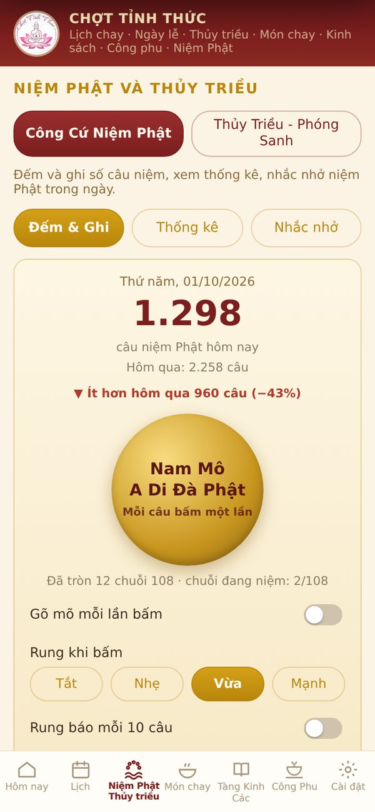

Ứng dụng Android · Miễn phí · Không quảng cáo
CHỢT TỈNH THỨC
Người bạn đồng hành trên con đường tu học
Nhớ ngày chay, ngày vía, đọc tụng kinh, công phu, đếm niệm Phật, nghe pháp và xem thủy triều để phóng sanh, tất cả trong một ứng dụng nhỏ gọn, dễ dùng cho mọi lứa tuổi.
Miễn phí trọn đờiKhông quảng cáoKhông cần tài khoảnDữ liệu chỉ lưu trong máy


- Lời Phật dạy mỗi ngàyPháp Cú và lời chư Tổ, thông báo mỗi sáng
- Lịch chay, ngày víaÂm dương, nhị đến thập trai, trường chay
- Công Cứ Niệm PhậtĐếm câu, tiếng mõ, rung, thống kê năm
- Thủy triều – Phóng sanh34 điểm ven biển, biểu đồ 24 giờ
- Kinh sách9 bộ kinh, chú, nghi thức, lật từng trang
- Nghe pháp, tụng kinhMP3, nhạc niệm Phật, chỉnh tốc độ
- Công phuChuông, mõ, khánh, mõ tự đánh
- Món chay200 món chay tịnh, từng bước
Cài trong 4 bước:1Tải file2Mở file vừa tải3Cho phép cài đặt4Mở app, cho phép thông báoHướng dẫn sử dụng (PDF)
Thứ năm
1
Tháng 10 năm 2026
Ngày 21 tháng 8Năm Bính Ngọ · Ngày …
Không phải ngày trai
LỜI PHẬT DẠY HÔM NAY
…
Sắp tới: …
LỊCH PHẬT SỰ
Ngày vía và lễ lớn sắp tới
Tính theo âm lịch Việt Nam, tự cập nhật mỗi ngày. Ngày lễ lớn được tô vàng.
THƯ VIỆN TỊNH ĐỘ
Liên Tông Thập Tam Tổ
Mười ba vị Tổ sư Tịnh Độ tông, từ Lư Sơn Huệ Viễn đến Ấn Quang Đại Sư. Chọn một vị Tổ để xem hành trạng và những tác phẩm nên đọc.
CHƯ TÔN ĐỨC CẬN ĐẠI
Những vị Cao Tăng dẫn đường thời nay
Sách và pháp âm giảng giải Tịnh Độ bằng lời gần gũi, dễ hiểu cho người hôm nay.
TỦ SÁCH
Sách Tịnh Độ & khai thị
Sách khuyên niệm Phật, hộ niệm và trước tác của chư Tổ, chư Đại Đức. Bấm vào cuốn sách để mở đọc, kéo ngang kệ để xem thêm.
Sách lấy từ các bản ấn tống trên niemphat.vn, tinhtong.vn, dharmasite.net, budsas.net và chùa Điều Ngự. Một số tác phẩm chữ Hán của các vị Tổ đời Đường, Tống chưa có bản dịch tiếng Việt nên chưa đưa vào.
KINH TỤNG HẰNG NGÀY
Tàng Kinh Các
Các bộ kinh, chú và nghi thức tụng niệm, đọc như lật từng trang sách, chỉnh được cỡ chữ.
Pháp khíChạm để thỉnh chuông, gõ mõ, đánh khánh khi tụng kinh. Bật mõ tự đánh để giữ nhịp.
80 nhịp/phút
PHÁP ÂM & VIDEO
Xem kênh trên YouTube ↗Kênh Chợt Tỉnh Thức
5 video chọn lọc. Xem xong một video, trang tự chuyển sang video kế tiếp.
▶ Xem xong video này, trang tự phát video kế tiếp; hết video 5 thì quay lại video 1.
NGHE PHÁP
Kinh tụng, nhạc niệm Phật, khai thị
TÌM BAN HỘ NIỆM GẦN NHÀ169 ban ở 48 tỉnh thànhDanh sách do banhoniem.com tổng hợp
HỘ NIỆM
Hộ Niệm Vãng Sanh
Lời khai thị đọc bên người bệnh, lúc lâm chung và sau khi mất, cùng danh sách Ban Hộ Niệm khắp các tỉnh thành. Nội dung giống mục Hộ Niệm trong app.
Trước lúc lâm chungGiữ phòng yên tĩnh, không khóc lóc; khai thị nhẹ nhàng, cùng niệm Phật theo nhịp người bệnh.
Ngay khi tắt hơiKhông đụng chạm, không tắm rửa thân xác trong 8 đến 12 tiếng; tiếp tục niệm Phật liên tục.
Sau 12 tiếngThăm thân, khai thị thêm, hồi hướng công đức; lo hậu sự trong chánh niệm.
Tên trong bài (Nguyễn Thị Sáu, pháp danh Thị Bảy…) là tên mẫu. Khi đọc, xin thay bằng họ tên và pháp danh của người được hộ niệm.
PHÓNG SANH
Xem thủy triều phóng sanh
Xem con nước trước khi phóng sanh, tụng nghi thức đúng pháp để các loài được an ổn trở về.
Đang tải lịch thủy triều…
Mực nước dự báo từ mô hình Open-Meteo, tính theo mực nước biển trung bình; có thể lệch vài chục phút và vài tấc so với bảng thủy triều chính thức. Sông rạch trong đất liền có giờ nước lớn trễ hơn cửa biển.
Chọn nơi phóng sanhCá nước ngọt thả sông, hồ; cá biển, ốc biển thả ra biển. Tránh nơi có người giăng lưới, câu bắt.
Chọn giờ con nướcThả lúc nước đang lên, gần giờ nước lớn để các loài theo dòng ra xa, tránh bị mắc cạn.
Tụng nghi thứcQuy y cho các loài, niệm Phật, hồi hướng. Nghi thức phóng sanh có sẵn trong Tàng Kinh Các.Mở Nghi Thức Phóng Sanh
MÓN CHAY
200 món chay tịnh
Không ngũ vị tân, có nguyên liệu và cách làm từng bước. Chọn nhóm món hoặc gõ tên, nguyên liệu để tìm.
NHẬP MÔNCho người mới bước vào cửa Phật
Quy y Tam Bảo là gì?
Quy y Tam Bảo là quay về nương tựa Phật, Pháp, Tăng. Phật là bậc giác ngộ, thầy dẫn đường; Pháp là lời Phật dạy, con đường đưa đến an vui giải thoát; Tăng là đoàn thể người xuất gia thanh tịnh, gìn giữ và truyền trao chánh pháp. Người muốn chính thức làm Phật tử thì đến chùa xin thọ lễ quy y với một vị thầy, nhận pháp danh, và từ đó lấy Tam Bảo làm chỗ nương tựa trong đời sống.
Năm giới của người Phật tử tại gia
Năm giới là nền tảng đạo đức của người tại gia: không sát sanh, không trộm cắp, không tà dâm, không nói dối, không uống rượu và dùng các chất gây say nghiện. Giữ năm giới là giữ phần làm người, gia đình êm ấm, xã hội an ổn. Chưa giữ trọn được thì có thể phát nguyện giữ từng giới, rồi tăng dần.
Niệm Phật thế nào cho đúng?
Niệm Phật Tịnh Độ cần đủ ba điều: Tín (tin có Phật A Di Đà và cõi Cực Lạc, tin Phật nguyện tiếp dẫn), Nguyện (tha thiết mong được sanh về Cực Lạc) và Hạnh (thật sự niệm câu Nam Mô A Di Đà Phật). Niệm cho rõ ràng từng chữ, miệng niệm rõ, tai nghe rõ, tâm nhớ rõ. Có thể niệm ra tiếng, niệm thầm hoặc lần chuỗi; quan trọng là niệm đều đặn mỗi ngày và hồi hướng cầu sanh Tịnh Độ.
Công phu sáng tối tại gia
Mỗi ngày nên giữ một thời khóa cố định. Buổi sáng: lễ Phật, niệm Phật hoặc tụng một thời kinh ngắn như Kinh A Di Đà. Buổi tối: lễ Phật, niệm Phật, sám hối lỗi lầm trong ngày rồi hồi hướng. Thời gian dài ngắn tùy hoàn cảnh, cốt yếu là đều đặn không bỏ và giữ lòng thành kính.
Ăn chay theo ngày trai
Người chưa ăn chay trường có thể giữ ngày trai theo âm lịch: nhị trai (mùng 1, rằm), tứ trai (mùng 1, 14, rằm, 30), lục trai (mùng 8, 14, rằm, 23, 29, 30) hoặc thập trai (mùng 1, 8, 14, rằm, 18, 23, 24, 28, 29, 30). Tháng thiếu thì ngày 29 thay cho ngày 30. App Chợt Tỉnh Thức nhắc ngày chay tự động theo lựa chọn của quý vị.
Phóng sanh đúng pháp
Phóng sanh là cứu mạng các loài sắp bị giết, nuôi lòng từ bi. Nên mua các loài đang bị bày bán, chọn nơi thả phù hợp (cá nước ngọt thả sông hồ, loài biển thả ra biển), tránh nơi có người giăng lưới câu bắt. Trước khi thả tụng nghi thức phóng sanh, quy y và niệm Phật cho các loài rồi hồi hướng. Không nên đặt hàng trước để bắt thả, vì như vậy vô tình khiến các loài bị bắt thêm.
HỎI ĐÁP
Chư Tổ giải đáp đường tu niệm Phật
Những thắc mắc thường gặp của người tu tại gia, với lời đáp tóm lược ý từ khai thị của Ấn Quang Đại Sư, Hòa Thượng Tịnh Không và Hòa Thượng Tuyên Hóa.
Lời đáp được tóm lược ý, không phải trích nguyên văn. Xin đọc thêm trong Ấn Quang Văn Sao, các bài giảng của HT Tịnh Không và Khai Thị Lục của HT Tuyên Hóa.
TÀNG KINH CÁC · KINH
Kinh Thủ Lăng Nghiêm
Hán dịch: Bát Lạt Mật Đế · Việt dịch: Cư sĩ Tâm Minh Lê Đình Thám
NGHE PHÁP
Bấm vào bài để nghe. Âm thanh phát từ archive.org, cần có mạng.
1 / 1